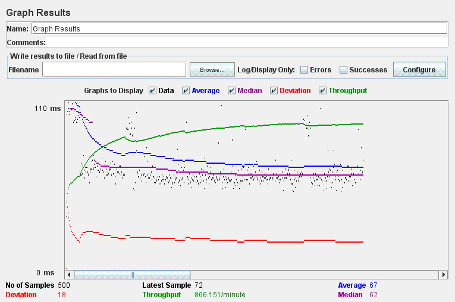
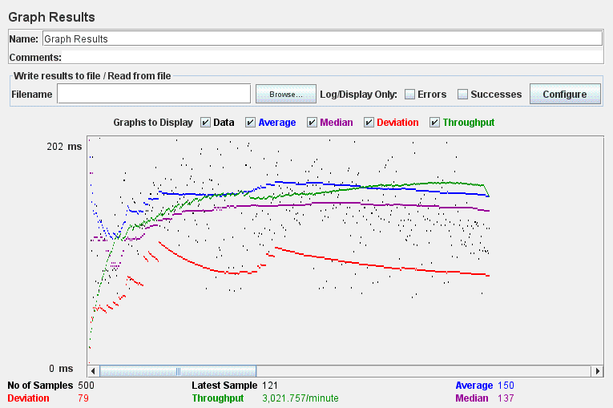
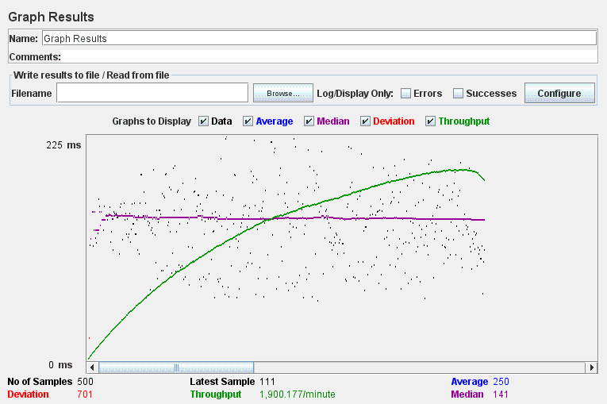
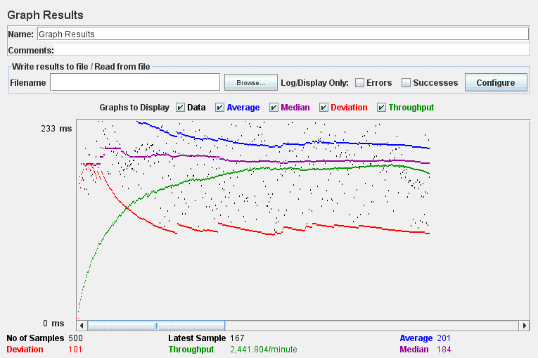

| Case | Graph Results Screenshot | Average Query Time Value(ms) | More |
| Case 1: HTTP/1 thread |  | 67 ms | Sample Size: 500 Median: 62 ms Throughput: 866.151/min Deviation: 18 |
| Case 2: HTTP/10 threads |  | 150 ms | Sample Size: 500 Median: 137 ms Throughput: 3,021.757/min Deviation: 79 |
| Case 3: HTTPS/10 threads |  | 250 ms | Sample Size: 500 Median: 141 ms Throughput: 1,900.177/min Deviation: 701 |
| Case 4: HTTPS/10 threads/No prepared statements |  | 201 ms | Sample Size: 500 Median: 184 ms Throughput: 2,441.804/min Deviation: 101 |